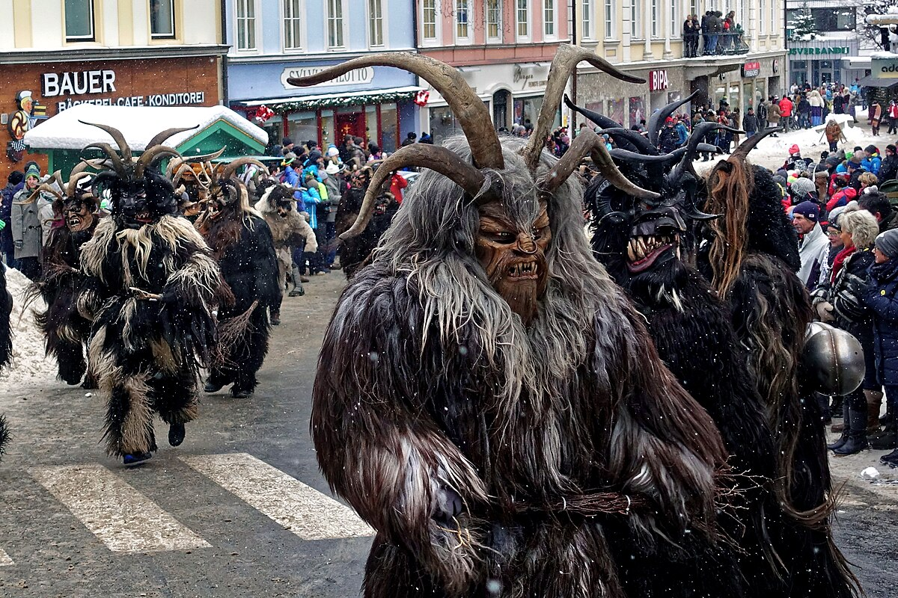
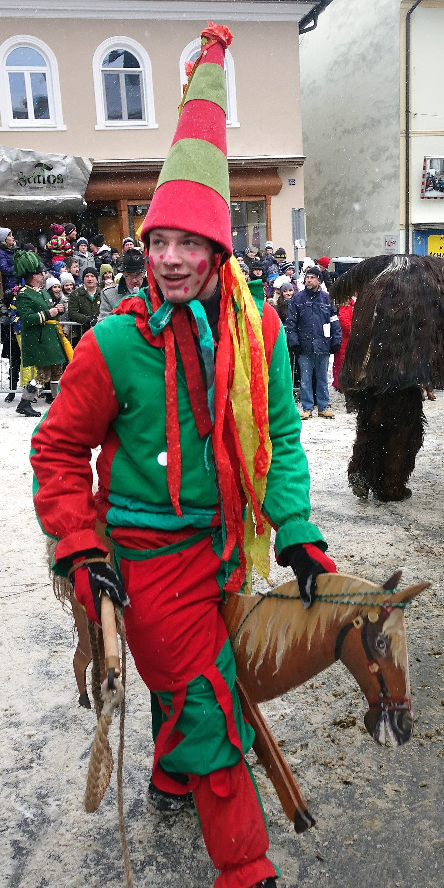
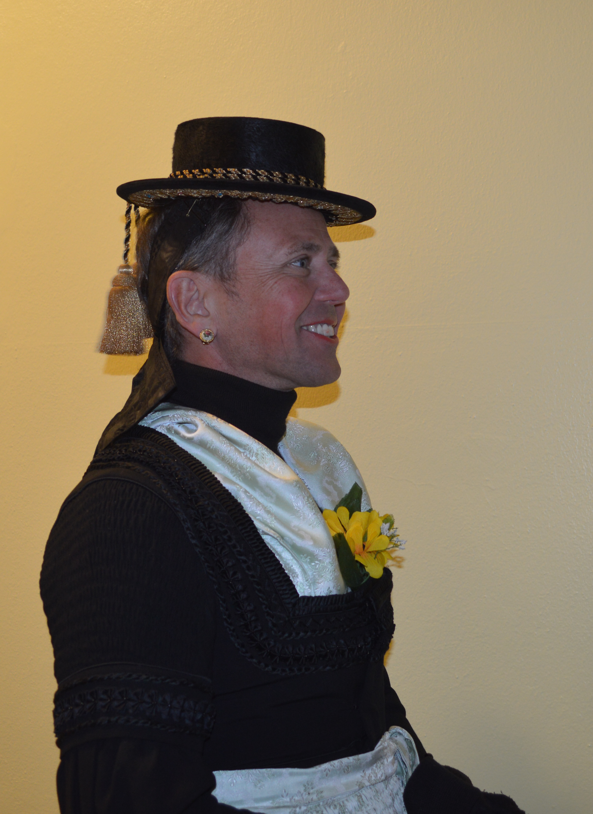
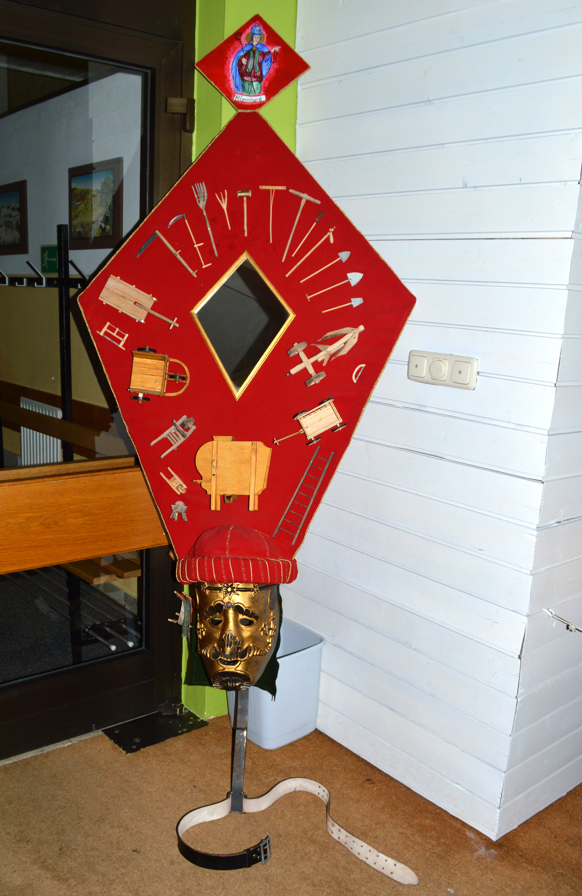

Wo uralte Masken die Winternacht beherrschen — ein UNESCO-Kulturerbe, das seit dem 14. Jahrhundert die Geister des Gasteiner Tals vertreibt
6. Jänner 2026—Bad Hofgastein, Salzburg
Scrollen
Wenn die Nacht über dem Gasteiner Tal hereinbricht und der Schnee im Schein hunderter Fackeln zu glühen beginnt, erwacht eine der ältesten Wintertraditionen Österreichs zu neuem Leben. Der Gasteiner Perchtenlauf ist kein Spektakel für Zuschauer — er ist ein Ritual, das den Winter herausfordert, böse Geister vertreibt und die Hoffnung auf ein fruchtbares neues Jahr besiegelt.
Die Wurzeln des Gasteiner Perchtenlaufs reichen bis ins 14. Jahrhundert zurück — tiefer als jedes andere noch lebende Brauchtumsfest im Salzburger Land. In den langen, dunklen Rauhnächten zwischen Wintersonnenwende und Dreikönig zogen Knechte und Bauern durch die verschneiten Gassen, verkleidet als überirdische Wesen, um den Winter und seine finsteren Begleiter zu vertreiben. Was als heidnischer Fruchtbarkeitsritus begann, wurde über die Jahrhunderte von Kirche und Obrigkeit immer wieder verboten — und immer wieder heimlich fortgeführt.
Urkundlich belegt ist ein Perchtenlauf anlässlich des Besuchs von Kaiser Ferdinand I. im Gasteinertal im Jahr 1837. Die Perchten wurden eigens für den kaiserlichen Gast aufgeboten — ein Zeichen dafür, wie tief der Brauch bereits damals in der regionalen Identität verwurzelt war. Seither hat sich der Gasteiner Perchtenlauf ohne Unterbrechung gehalten, durch zwei Weltkriege, durch den Wandel von der Agrar- zur Tourismuswirtschaft, durch den Siegeszug der Moderne.
14. Jhdt.
Erste Belege für Perchtenumzüge im Gasteiner Tal. Knechte und Bauern ziehen in den Rauhnächten durch die Dörfer.
1837
Dokumentierter Perchtenlauf für Kaiser Ferdinand I. — der Brauch gewinnt überregionale Bekanntheit.
1950er
Wiederbelebung in organisierter Form nach dem Zweiten Weltkrieg. Erste Vereinsstrukturen entstehen.
2011
Die Gasteiner Perchten werden in die österreichische Liste des Immateriellen Kulturerbes der UNESCO aufgenommen.
2026
Der nächste große Perchtenlauf — ein Ereignis, das nur alle vier Jahre in voller Pracht stattfindet.

Schiechperchten — die „bösen" Perchten mit furchteinflößenden Masken und Fellen vertreiben die Wintergeister. Foto: Wikimedia Commons, CC BY-SA 4.002
Die Figuren des Umzugs — 140 Masken, jede mit eigener Seele
Was den Gasteiner Perchtenlauf von allen anderen Perchtenumzügen Österreichs unterscheidet, ist die beeindruckende Vielfalt seiner Figuren. Rund 140 Teilnehmer verwandeln sich in mythologische Gestalten, die jeweils eigene Rollen und Bedeutungen tragen. Es gibt keine bloßen Kostüme — jede Maske, jede Kappe, jeder Schritt ist Teil eines jahrhundertealten Zeichensystems.
Die imposantesten Figuren sind die sogenannten „Kappenträger": Männer, die bis zu 2,70 Meter hohe und 50 Kilogramm schwere Kopfbedeckungen tragen, geschmückt mit filigranen Spiegel- und Goldverzierungen, Blumen, Früchten und religiösen Symbolen. Diese Kappen werden in monatelanger Handarbeit gefertigt und stellen den Wohlstand und die Fruchtbarkeit dar, die man sich für das kommende Jahr erhofft. Daneben gibt es die Heiligen Drei Könige, Hanswurste (Narren), Hexen, Schleifer, Teufel und die eigentlichen Perchten — wild-schöne Gestalten mit Fell, Hörnern und Glocken.
Eine eiserne Regel gilt seit jeher: Keine Frau darf am Perchtenlauf teilnehmen. Diese Tradition wird bis heute streng eingehalten — nicht als Diskriminierung, so die Perchtenvereine, sondern als Bewahrung des überlieferten Brauchtums in seiner originalen Form.
„Wenn du in einer Jännernacht im Gasteiner Tal stehst und 140 maskierte Gestalten auf dich zukommen, mit Glockengeläut, Fackeln und dem Stampfen schwerer Stiefel — dann verstehst du, warum dieser Brauch sieben Jahrhunderte überlebt hat."
Überlieferung aus dem Gasteiner Tal
03
Programm & Höhepunkte
Der Perchtenlauf ist kein einstündiges Event — er ist ein Erlebnis, das sich über den gesamten Tag und tief in die Nacht hinein erstreckt. Hier der typische Ablauf, wie er sich am 6. Jänner in Bad Hofgastein entfaltet:
14:00
Sammlung & Einkleidung
Die Figuren versammeln sich im Vereinshaus. Die schweren Kappen werden aufgesetzt, Masken angelegt, letzte Handgriffe an den jahrhundertealten Gewändern.
15:30
Aufstellung des Umzugs
In streng festgelegter Reihenfolge formieren sich die 140 Figuren. Voran die Hanswurste und Narren, dann die Perchten, zuletzt die Kappenträger in voller Pracht.
16:00
Der große Umzug beginnt
Begleitet von Glockengeläut, Peitschenknallen und dem dumpfen Rhythmus der Trommeln zieht der Umzug durch die Gassen von Bad Hofgastein. Tausende Zuschauer säumen die Straßen.
17:30
Fackelbeleuchtung & Höhepunkt
Mit Einbruch der Dunkelheit werden die Fackeln entzündet. Die Perchten tanzen, die Kappenträger drehen sich — der dramatischste Moment des Abends.
19:00
Einkehr & Nachfeier
Traditionelles Beisammensein in den Gasthäusern. Glühwein, Bauernkrapfen und Erzählungen über die Geister der Nacht. Der Brauch klingt aus — bis zum nächsten Mal.
Ad — In-Article Mid (Responsive)
◆
04
Eindrücke

Schönperchten — die „guten" Perchten symbolisieren Fruchtbarkeit und Wohlstand. CC BY-SA 4.0

Gesellin in traditioneller Pongauer Tracht — Goldegger Perchtenlauf. CC BY-SA 3.0

Handgeschnitzte Perchtenmaske — jede ein Unikat, über Generationen weitergegeben. CC BY-SA 4.0
05
Praktische Infos für Besucher
Anreise mit der Bahn
Direktzüge ab Salzburg Hbf nach Bad Hofgastein (ca. 1,5 Std.). ÖBB-Sparschiene ab 19 Euro. Am 6. Jänner zusätzliche Regionalzüge.
Anreise mit dem Auto
A10 Tauernautobahn, Abfahrt St. Johann/Pongau, weiter über B311 ins Gasteinertal. Parkplätze ausgeschildert — früh kommen!
Wetter & Ausrüstung
Jänner im Gasteinertal: -5 bis -10 Grad abends. Warme Kleidung, gefütterte Schuhe, Handwärmer. Der Umzug findet bei jedem Wetter statt.
Unterkunft
Bad Hofgastein bietet zahlreiche Hotels und Pensionen. Rund um den 6. Jänner schnell ausgebucht — mindestens 3 Monate vorher reservieren.
Bester Zeitpunkt
Ab 15:30 Uhr Position am Ortszentrum sichern. Die Hauptstraße füllt sich schnell. Gegen 17:00 Uhr mit den Fackeln kommt der magischste Moment.
Fotografieren
Fotografieren erlaubt und erwünscht! Kein Blitz — stört die Atmosphäre. Hohe ISO-Werte und lichtstarke Objektive einpacken.